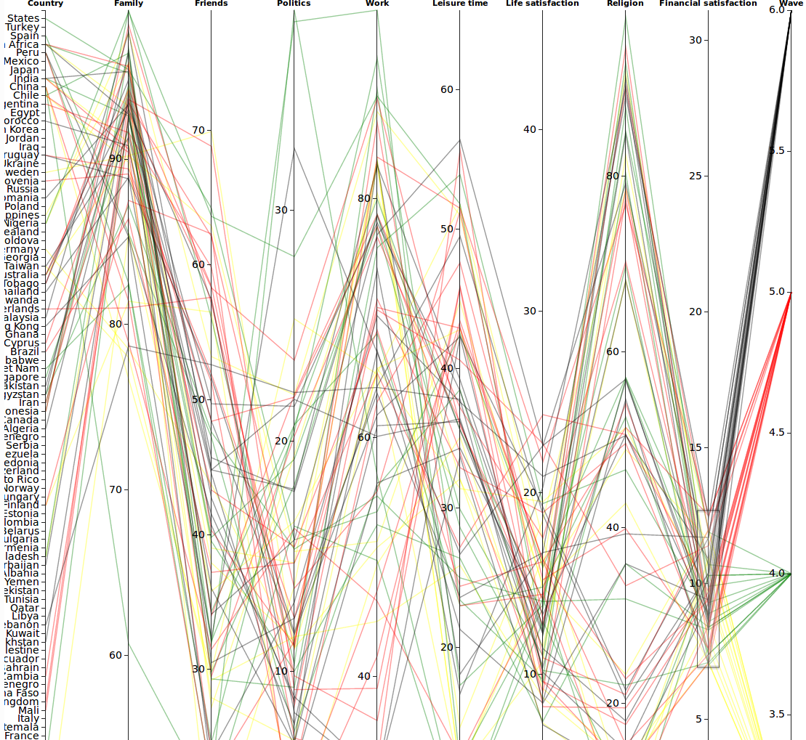

Trail 2
Deeper into the question if there is a correlation between life and financial satisfaction and what peoples think is important in life.
Here on my visualization tool it is possible to brush and sort out countries, or other variables.
It is possible to filter on years.
It is also possible to see the countries different variable values in the table.
It is very interesting, it seems that the better financial situation people have, the less important is religion. And the worse financial situation the more important is religion.

The worse financial situation, the worse life satisfaction.
My conclution would be that the better financial situation people have, both family and leisure time is very important.